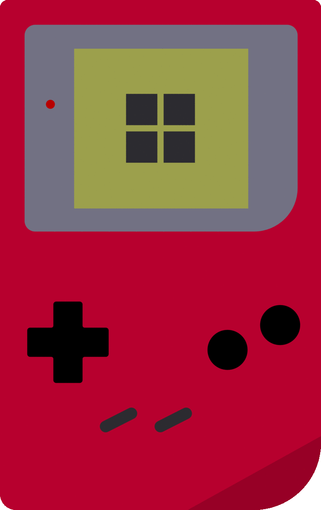

Yoshilink
Connect your Game Boy, boot Yoshi, and start playing with your friends!
Connect your Game Boy
Connect your Game Boy with the USB to Game Link adapter and click "connect".
Version: 0.1.0
Connecting...
Connecting to Yoshi...
Ensure your Game Boy is turned on and in the Yoshi main menu.
Select a username:
Select Game Mode
Play a random opponent
Create or join a private game
Game Boy selection: Level 1 / Low
Change Level / Speed on your Game Boy at any time before joining a match.
Use this if you restarted your Game Boy
Finding Opponent...
Please wait while we find you a match!
Loading...
Opponent Disconnected
Your opponent has left the game. You win!
Please restart Yoshi on your Game Boy before continuing.
Find another match?
Create game
Join game
Connecting to game server...
In Lobby:
Players:
Please wait for the lobby leader to start the game!
Starting game...
In Game:
In Game:
Game finished!
Waiting for host to start next game...